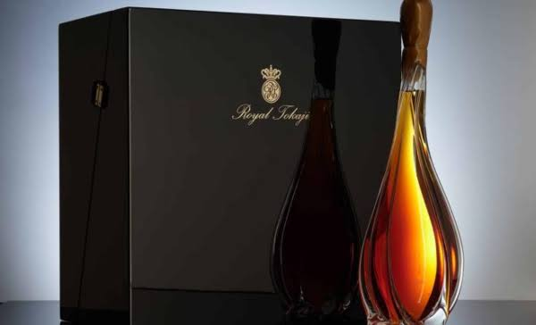
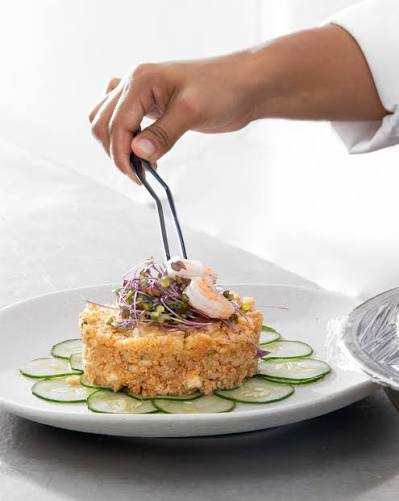
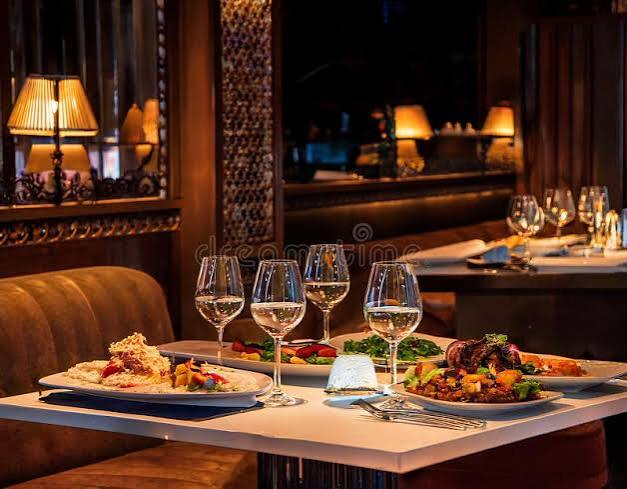
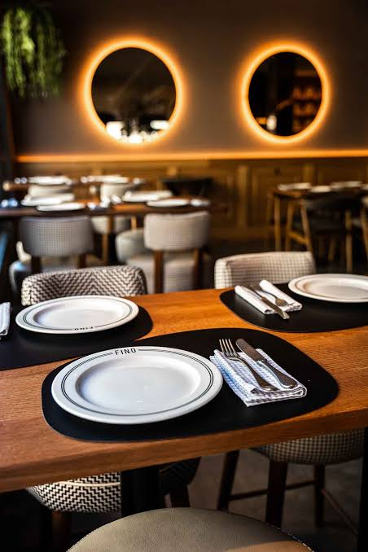
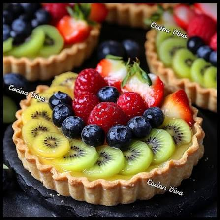

01 — MARIDAJE
Maridaje
Una selección de vinos cuidadosamente elegidos para acompañar nuestra cocina y transformar cada plato.
Descubrir experiencia →Más que una cena, una composición de sabores, aromas, espacios y momentos diseñada para despertar todos los sentidos.
Descubrir nuestras experienciasEn Le Château Gourmet hemos creado diferentes experiencias para que cada visita tenga una personalidad propia. Desde el vino que acompaña un plato hasta la iluminación de una mesa, cada elemento está pensado para formar parte del recuerdo.
Selecciona una experiencia para descubrirla.

Una selección de vinos cuidadosamente elegidos para acompañar nuestra cocina y transformar cada plato.
Descubrir experiencia →
Técnica, creatividad e ingredientes seleccionados para convertir cada plato en una pieza gastronómica.
Descubrir experiencia →
Un espacio sofisticado donde iluminación, música y detalles se combinan para crear una noche especial.
Descubrir experiencia →El vino no acompaña simplemente una comida: puede transformar la manera en que percibimos sus aromas, texturas y sabores. Por eso nuestra selección está organizada para encontrar el equilibrio adecuado entre cada copa y cada creación de nuestra cocina.
Explora nuestra carta de vinos por categorías. Selecciona una botella para conocer su perfil, intensidad y el tipo de preparación con la que puede acompañarse.
Filtra nuestra selección por estilo.
Frutos negros · Especias · Roble
Ciruela · Mora · Cacao
Frutos rojos · Vainilla · Suave
Cereza · Frambuesa · Tierra
Mora · Pimienta · Chocolate
Frutos rojos · Especias · Roble
Manzana · Pera · Mantequilla
Cítricos · Hierbas · Frescura
Manzana · Flores · Cítricos
Pera · Melón · Acidez
Fresa · Frambuesa · Floral
Fruta roja · Floral · Fresco
Manzana · Pan · Burbuja fina
Cítricos · Fruta blanca · Elegancia
Pera · Manzana · Floral
Melocotón · Flores · Dulce
Miel · Fruta madura · Floral
Frutos secos · Caramelo · Especias
Haz clic sobre cualquiera de nuestras opciones para conocer su perfil y recomendación de maridaje.
Nuestra cocina busca convertir ingredientes cuidadosamente seleccionados en composiciones donde la técnica y la presentación trabajan juntas. Cada plato se presenta como una parte de la historia de la noche.


La experiencia comienza antes del primer plato. La iluminación, la música, la distribución de las mesas y la atención forman parte de una atmósfera pensada para disfrutar sin prisa.
Una iluminación cálida y cuidadosamente distribuida para crear intimidad.
Una selección sonora elegante que acompaña el ritmo de la velada.
Vajilla, cristalería y detalles preparados para cada momento.
Un servicio atento y discreto para que cada visita sea especial.
Espacios pensados para celebraciones, cenas románticas, aniversarios y encuentros especiales donde la privacidad se convierte en parte de la experiencia.
Desde la llegada hasta el último detalle, nuestro objetivo es crear una atmósfera donde la gastronomía y el ambiente formen una sola experiencia.